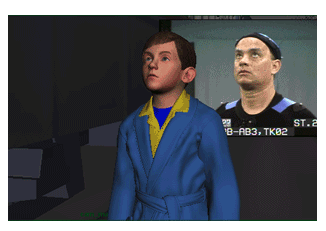

Onderzoek
In het kader van het EU-project CONBOTS doet de UGent (Afdeling musicologie - IPEM) onderzoek naar het motorische leervermogen van beginnende violisten en drummers, dit met het oog op de ontwikkeling van nieuwe technologie die op termijn leren op afstand mogelijk maakt. Het onderzoek staat onder leiding van Aleksandra Michalko, dr. Adriaan Campo, dr. Edith Van Dyck en prof. dr. Marc Leman.
Omdat de wekelijkse lessen kaderen in een wetenschappelijke studie, zullen er 4 lessen in ons labo in de Krook plaatsvinden.
Hoe vaak?
1 les per 2 maanden gedurende het schooljaar. De eerste les in ons lab vindt plaats in de 2de helft van november 2021. De eerste en laatste les duren 1u, de 2de en 3de les duren 45 minuten. Voor de exacte datums spreken we nog met jou, je ouders en je leerkracht af.
 Polar Express images 2004 by Warner Bros. Ent.I
Wat gebeurt er tijdens een les in ons lab?
Je volgt een gewone vioolles waarvoor je in ons lab een speciaal pak aantrekt dat het mogelijk maakt om de bewegingen van het lichaam te registreren (hetzelfde pak wordt trouwens ook gebruikt tijdens het aanmaken van computerspelletjes en animatie- en actiefilms). Je zal ook een speciale borstband dragen die uw hartslag meet. Achteraf worden de bewegingen geanalyseerd om zo de motorische en muzikale vooruitgang gedurende het schooljaar te meten.
Alle materialen en toestellen die gebruikt worden tijdens de sessies zijn niet invasief en veilig voor kinderen en volwassenen. Bovendien is de studie goedgekeurd door de Ethische Commissie van de UGent.
 Wat wordt er verwacht van ouders?
Wat wordt er verwacht van ouders?
Zorgen dat het kind op tijd naar de sessies komt en wekelijks een korte vragenlijst invullen over de oefentijd van uw kind. Ook zal er gevraagd worden om eenmalig een vragenlijst over muzikale achtergrond in te vullen.
Continuïteit
De voorziene duurtijd is vanaf november 2021 tot en met juni 2022.
Aan/Afwezigheid
Deelname aan het onderzoek is een voorwaarde om de wekelijkse vioollessen gratis te kunnen volgen bij de Centrale. Het is dus erg belangrijk dat leerlingen OP ALLE 4 LESSEN AANWEZIG zijn.
Je mag natuurlijk je deelname aan het project op ieder moment stopzetten.
Welke data gaan we verzamelen en hoe worden ze verwerkt?
Tijdens de les worden er video, audio en motion capture opnames gemaakt. We gaan ook de hartslag van uw kind meten tijdens het spelen. Alle resultaten worden verwerkt met respect voor de geldende privacywetten en met dekking van de Ethische Commissie. Beelden worden op geen enkele wijze online verspreid, of op andere manieren gedeeld.
Extra info
Voor elke sessie in ons lab wordt ook een drankbon voor het Krookcafé voor de ouders voorzien.
Onderzoek en corona
De hele studie gebeurt met inachtneming van de geldende coronamaatregelen.